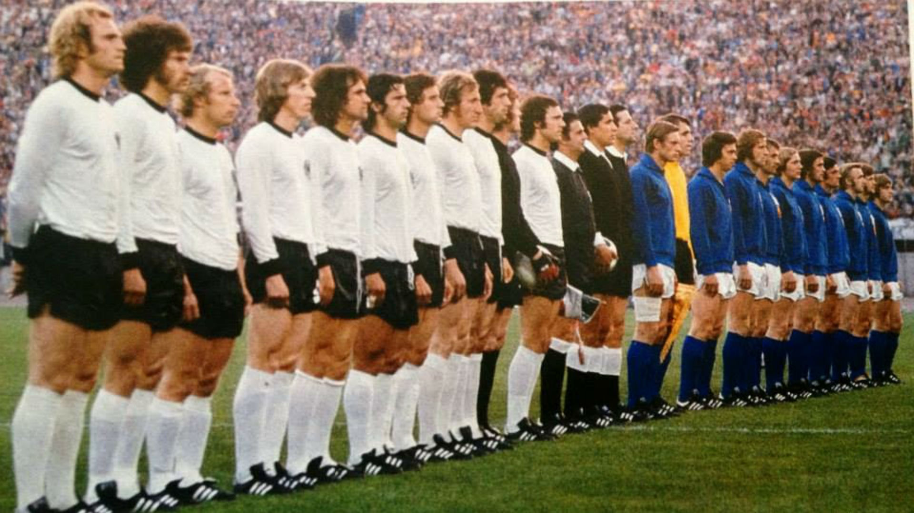

TOP MEJORES SELECCIONES HISTORICAS
-

- 
Brasil (1970)
Títulos: Mundial 1970.
Once de gala: Félix | Carlos Alberto, Brito, Piazza, Everaldo | Clodoaldo, Gérson | Jairzinho, Rivelino, Tostao, Pelé.
Entrenador: Mário Zagallo.
Hay pocas cosas que no se hayan dicho ya de la selección de Brasil de los años 70. Para muchos, esta selección, este estilo y todo lo que representa,
es sinónimo de buen fútbol, de jogo bonito y, sobre todo, de grandes éxitos. Liderados por un Pelé en sus últimos años de gloria,
la Brasil del 74 dominó gracias a la increíble combinación de los cinco grandes “10” de la historia de la canarinha:
Gerson, Jairzinho, Rivelino, Tostao y Pelé.
España (2008 – 2010 – 2012)
Títulos: Eurocopa 2008, Mundial 2010, Eurocopa 2012.
Once de gala 2008: Iker Casillas | Sergio Ramos, Carles Puyol, Carlos Marchena, Joan Capdevila | Marcos Senna, Andrés Iniesta, Xavi Hernández, Cesc Fábregas, David Silva | Fernando Torres.
Once de gala 2010: Iker Casillas | Sergio Ramos, Carles Puyol, Gerard Piqué, Joan Capdevila | Xabi Alonso, Sergio Busquets, Xavi Hernández | Pedro Rodríguez, Andrés Iniesta, David Villa
Once de gala 2012: Iker Casillas | Álvaro Arbeloa, Sergio Ramos, Gerard Piqué, Jordi Alba | Xabi Alonso, Sergio Busquets, Xavi Hernández | David Silva, Cesc Fábregas, Andrés Iniesta.
Entrenador (2008): Luis Aragonés.
Entrenador (2010 y 2012): Vicente del Bosque.
La España del “Tiki-Taka” ha sido una de las selecciones más dominadoras de la historia reciente de este deporte.
Si bien las bases ya estaban sentadas, el juego de posesión inspirado en el exitoso modelo de Pep Guardiola tuvo un papel protagónico
en los éxitos de la Furia Roja. Gracias a este estilo, España logró conquistar el Mundial por primera vez en su historia y logró ganar la Eurocopa
consecutivamente.
Alemania (1974)
Títulos: Mundial 1974.
Once de gala: Sepp Maier | Berti Vogts, Georg Schwarzenbeck, Franz Beckenbauer, Paul Breitner | Wolfgang Overath, Gerd Muller, Juergen Grabowski | Ulrich Hoeness, Rainer Bonhof, Bernd Hoelzenbein
Entrenador: Helmut Schön.
Ahora bien, aquél equipo que pudo derrotar a la mejor selección holandesa de la historia no fue otro que la Alemania de Franz Beckenbauer.
La Alemania de los 70 fue pionera en el estilo germano de ver el fútbol y, para algunos expertos, ha sido la mejor selección alemana en toda la historia.